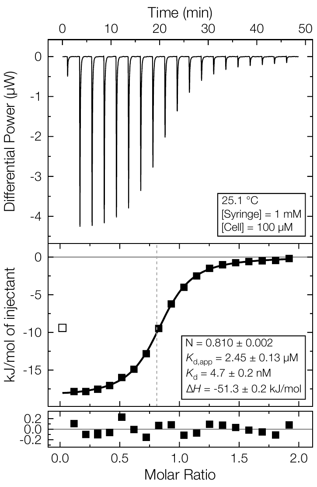
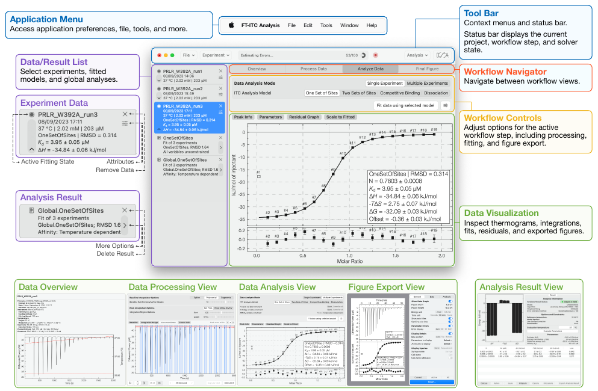

Open & inspect
Bring in instrument exports and review the raw experiment before making decisions.
Free, open-source ITC analysis
FT-ITC Analysis is a local desktop application for processing, fitting and communicating isothermal titration calorimetry experiments. From raw trace to exported figure, the analytical path stays visible.

Desktop first
Use the app where your experimental data lives. No account, cloud upload or hosted project space is required.
A visible workflow
FT-ITC Analysis keeps experimental data, processing choices and results together instead of treating them as disconnected steps.
Bring in instrument exports and review the raw experiment before making decisions.
Adjust baselines, integrate peaks and fit standard models with the underlying data in view.
Use multi-experiment analyses and make clear figures or results for the next conversation.

Built for day-to-day analysis
Import common MicroCal and instrument-derived files, correct concentrations when needed, work with integrated heats, then make model and global-analysis choices deliberately.
See supported files and a first-analysis guide →Web viewer
The web version is being developed as a future way to inspect FT-ITC data and help prospective users understand the workflow. It is not presented as a replacement for desktop processing or analysis.
Capabilities and availability will be announced when ready.
Follow development on GitHub ↗